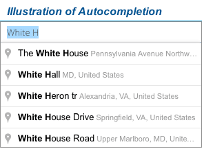
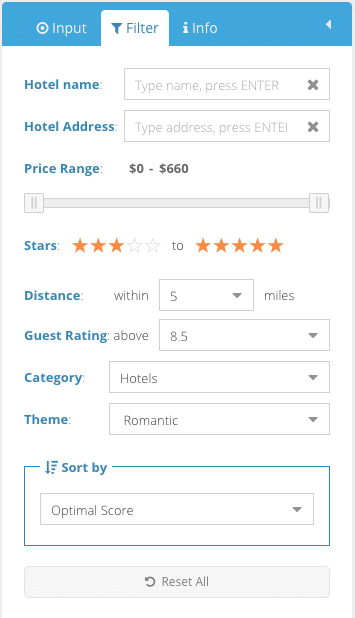

Street Level Destination Input
The first step for a hotel search exercise is to input the destination. In addition to a general place such as a city name, FindOptimal encourages you to type in the exact address of your destination. For example, if you have a business meeting at UPS Corporate's headquarter and need a hotel to stay at the previous night, we suggest you to input the exact address, 55 Glenlake Pkwy NE, Atlanta, GA, rather than just Atlanta. In that way, our search engine will find the hotels closest to your true destination. UPS Corporate's headquarter is 16 miles away from the Atlanta DownTown. We don't want you trapped in the rush hour traffic and miss your important meeting.Place Autocompletion
To help you input the destination quickly and accurately, we provide the autocompletion function powered by Google for the place input box. While you are typing the beginning of an address, the widget predicts rest of the address and generates suggestions in a list box. You can simply select the correct one to complete the input. In most cases, the first item on the list is what you need. So you can press Enter to accept it.
Please note that the final destination must be on the suggestion list. Otherwise, we will not be able to locate your destination.
Multiple Destinations
Sometimes you may have several meetings in the same city. Or, you plan to have a tour of a city that has several must-see places. In this situation, you want to find a hotel convenient for visiting multiple locations. FindOptimal.com allows you to enter multiple destinations. It will find the optimal hotels with the shortest average distance to all those locations. All locations will be shown on the map, along with the recommended hotels for you. You can type in up to 10 destinations in the same region. The second to the tenth input box is only visible when you populate the previous one.Hotel Filtering
If you have defined your searching profile precisely, you don't need to use filters because FindOptimal does the hotel filtering work before creating the final list for you. However, we understand that your criteria may change from situation to situation. And sometimes you would just like to see all options and do the hotel filtering by yourself. Therefore, we provide the following most used filters on the Filter panel.
- Hotel name: you may type part of the hotel name and press Enter to find hotels with that name;
- Hotel address: you may type part of the street name and press Enter to find hotels on that street;
- Price range: the range of your budget per room per night;
- Stars: hotel star rating range;
- Distance: distance from your destination or the center of multiple destinations;
- Guest Rating: average rating by guests who have stayed in the hotel;
- Category: property type. Some properties such as apart-hotel may fall into two categories.
- Hotels: hotels, motels, resorts, inns, hostels, lodges, etc.
- Homestays: guest houses, bed & breakfast, residence, etc.
- Vacation Rental: apartments, condos, vacation home, villa, etc.
- Theme: theme offered by the hotel property. Large hotels usually accommodate multiple themes (e.g. business and family-friendly)
Search Result Sorting
As the default, FindOptimal sorts the search result by Optimal Score in the descending order. The Optimal Scores are generated based on hotel price, star rating, guest rating, distance to the destination and other preference defined by you. Please refer to the scoring page for more details. In case that you want to sort the results in a different way, we provide the following sorting methods.- Price: sort by price from low to high;
- Distance: sort by distance to the destination from near to far;
- Guest Rating: sort by guest rating from high to low;
- Stars : sort by star rating from high to low;
- Stars : sort by star rating from low to high;
- Name : sort by hotel name in the alphabetic order;
- Name : sort by hotel name in the opposite of the alphabetic order.